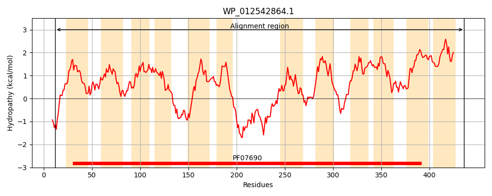
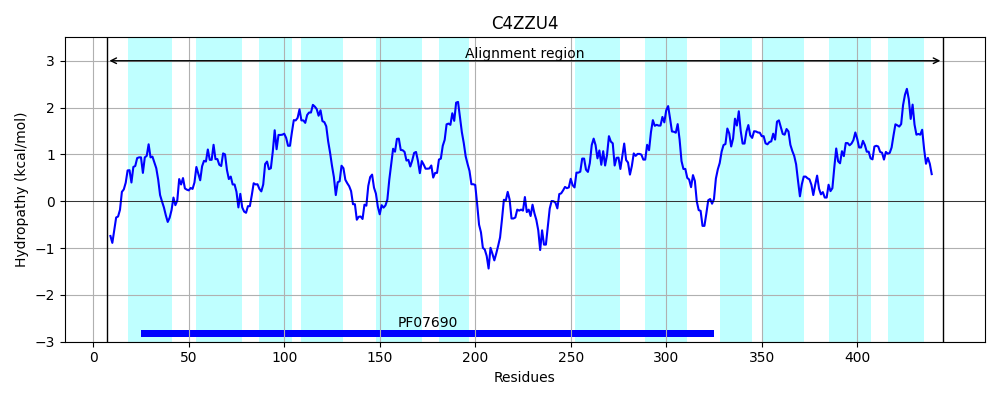
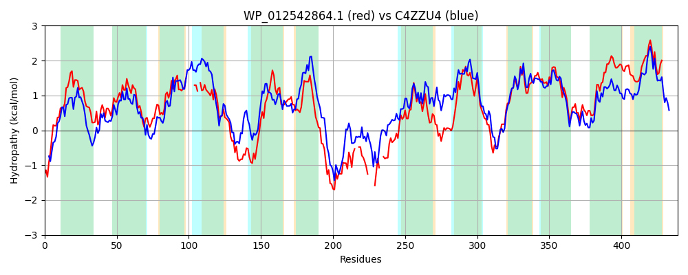

Hit Accession: C4ZZU4
Hit TCID: 2.A.1.14.40
Hit Description: gnl|BL_ORD_ID|2538 gnl|TC-DB|C4ZZU4|2.A.1.14.40 Predicted D-glucarate transporter OS=Escherichia coli (strain K12 / MC4100 / BW2952) GN=gudP PE=4 SV=1
Mach Len: 439
e:0.000000
Query TMS Count : 12
Hit TMS Count: 12
TMS-Overlap Score: 9.350000
Predicted Substrates:CHEBI:14311;glucarate(2-)
BLAST Alignment:
Score: 969 , Bit scores: 377 bits, E-value: 3.2e-128, Alignment length: 439, Percentage identity: 44
Query: 12 SSSGTKKRSRVRIVILLLLSVGTMINYLDRTILGIVAPQLTQEIHIDPAMMGIIFSAFAWTYALAQIPGGVFLDRFGNKLTYALSIFFWSLFTLLQSFT-----LGL-KTLLLLRLGLGVSEAPCFPANSRIVSTWFPQHERARATATYTVGEYIGLAAFSPLLFLILEHHGWRTLFFLTGGLGILFTLVWWRFYHEPHESRTANKAELDYIGANN--INNKIQN----VPFN--WRDARRLLGCRQIVGASLGQFAGNTTLVFFLTWFPSYLANERHLPWLHVGFFATWPFLAAAIGILFGGWISDRLLKRTGSVNISRKLPIISGLLLSSCIIAANWVSANSTVIIIMSVAFFGQGMVGLGWTLISDIAPENMAGLTGGIFNFCANMASIIAPLIIGVIISATGNFFYALIYVGLTALIGVIAYIFIIGDIKRIVLE 436
++S +KR+ R I+++L + T NY DR L I ++ ++I +DP MG +FSAF+W Y + QIPGG LDRFG+K Y SIF WS+FTLLQ F G+ L LR +G++EAP FP NSRIV+ WFP ER A + + +Y F+P++ + GW +FF GGLGI+ + +W + HEP++ NK EL+YI A IN QN VPF+ W ++LLG R ++G +GQ+ N FF+TWFP YL R + L GF A+ P + IG + GG ISD L++RTGS+NI+RK PI+ G+LLS ++ N+V+ +I M++AFFG+G+ LGW +++D AP+ ++GL+GG+FN N++ I+ P+ IG I+ TG+F ALIYVG+ ALI V++Y+ ++GDIKRI L+
Sbjct: 7 AASSVEKRTNARYWIVVMLFIVTSFNYGDRATLSIAGSEMAKDIGLDPVGMGYVFSAFSWAYVIGQIPGGWLLDRFGSKRVYFWSIFIWSMFTLLQGFVDIFSGFGIIVALFTLRFLVGLAEAPSFPGNSRIVAAWFPAQERGTAVSIFNSAQYFATVIFAPIMGWLTHEVGWSHVFFFMGGLGIVISFIWLKVIHEPNQHPGVNKKELEYIAAGGALINMDQQNTKVKVPFSVKWGQIKQLLGSRMMIGVYIGQYCINALTYFFITWFPVYLVQARGMSILKAGFVASVPAVCGFIGGVLGGIISDWLMRRTGSLNIARKTPIVMGMLLSMVMVFCNYVNVEWMIIGFMALAFFGKGIGALGWAVMADTAPKEISGLSGGLFNMFGNISGIVTPIAIGYIVGTTGSFNGALIYVGVHALIAVLSYLVLVGDIKRIELK 445 | Protein Hydropathy Plots: |
|---|
|  |  |
Pairwise Alignment-Hydropathy Plot:
|
|---|
|  |